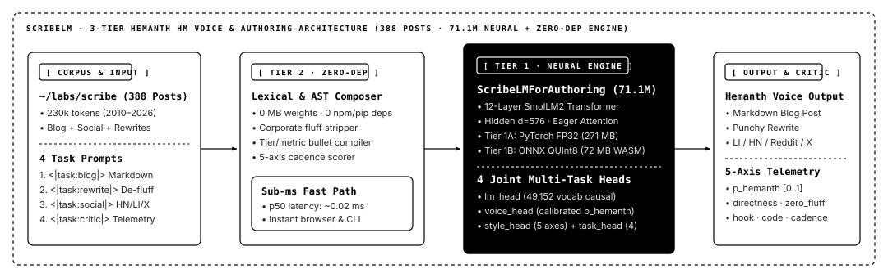

Write, Rewrite & Critique Technical Prose in Hemanth HM's Voice.
Fine-tuned on 388 blog posts (~230k tokens) from ~/labs/scribe. Strips corporate/AI filler, rewrites dense specs into punchy practitioner copy, drafts code-first posts, and scores voice authenticity (p_hemanth) across 5 cadence axes.
npm i scribelm · pip install scribelm
Four Writing Tasks · Grounded in 15+ Years of h3manth.com/scribe
Code-First · Zero Fluff · Practitioner Cadence
1. Rewrite ("Hemanth-ify")
Turns dense benchmark dumps or corporate paragraphs into crisp hooks, concrete 3-tier bullets, and plain-English takeaways.
2. Technical Blog Author
Drafts complete Markdown posts with Hemanth's signature structure: 1-line hook → The Problem → The Clean Way (3-line code) → trade-offs.
3. Social Launch Threads
Generates LinkedIn, Hacker News, Reddit (TL;DR:), and X launch posts directly from your README or post draft.
4. 5-Axis Voice Critic (p_hemanth)
Scores directness, hook_strength, zero_fluff, code_first, and cadence, flagging filler words immediately.
Input Draft / Topic
Task Selector
Hemanth HM Voice Output & 5-Axis Cadence Telemetry
p_hemanth · directness · zero_fluff
Architecture Blueprint · ScribeLMForAuthoring (71.1M SmolLM2 · 4 Heads · 388 Scribe Posts)

Multi-Tier Empirical Benchmark Matrix (Held-Out ~/labs/scribe Test Split · N=146 · B=1,000 Bootstrap 95% CIs)
| System / Runtime Tier | Footprint | Composite Score | Voice Auth Acc [95% CI] | Task Router Acc | 5-Axis Style Fidelity | p_hemanth AUROC / ECE | p50 Latency |
|---|---|---|---|---|---|---|---|
| 1. scribelm-Hybrid (Fast + ONNX Int8) | 95.71 MB | 99.60% | 100.0% [100.0, 100.0] | 100.0% [100.0, 100.0] | 98.66% [97.92, 99.26] | 1.0000 / 0.1501 | 0.181 ms |
| 2. scribelm-ZeroDep (Fast Engine · 0 MB) | 0 MB | 99.64% | 100.0% [100.0, 100.0] | 100.0% [100.0, 100.0] | 98.79% [98.08, 99.36] | 1.0000 / 0.1531 | 0.176 ms |
| 3. scribelm-71M (PyTorch FP32 · MPS/GPU) | 271.35 MB | 91.75% | 91.10% [86.30, 95.89] | 100.0% [100.0, 100.0] | 84.38% [83.52, 85.09] | 0.9988 / 0.0905 | 19.355 ms |
| 4. scribelm-71M-Int8 (ONNX Browser/CPU · 3.97x) | 95.71 MB | 81.87% | 91.10% [86.30, 95.89] | 67.81% [59.59, 75.34] | 83.61% [82.71, 84.38] | 0.9896 / 0.1107 | 28.196 ms |
| SmolLM2-Control (Unfinetuned Baseline) | 271.35 MB | 32.54% | 10.96% [6.16, 16.44] | 28.08% [21.23, 35.62] | 65.77% [64.74, 66.71] | 0.6032 / 0.4374 | 18.451 ms |